MillOS living world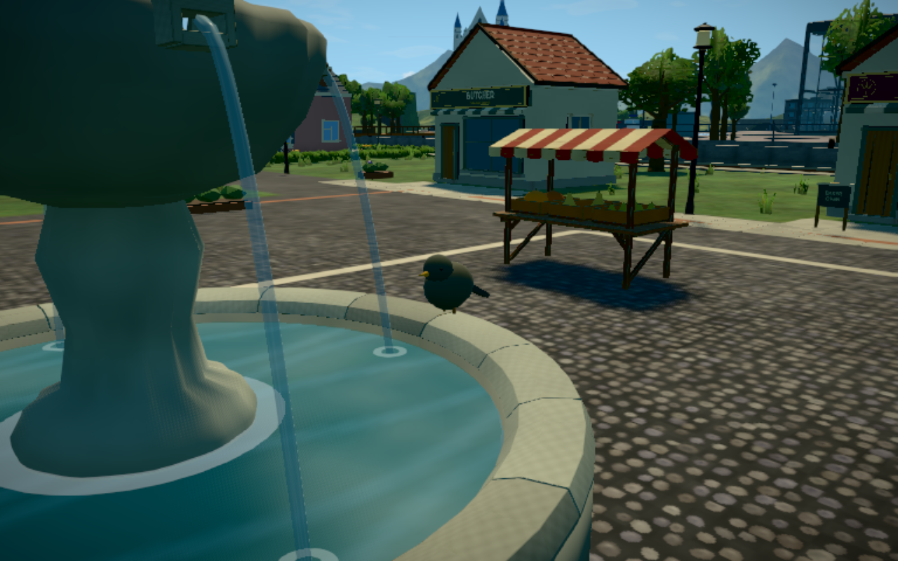
Fountain bird restored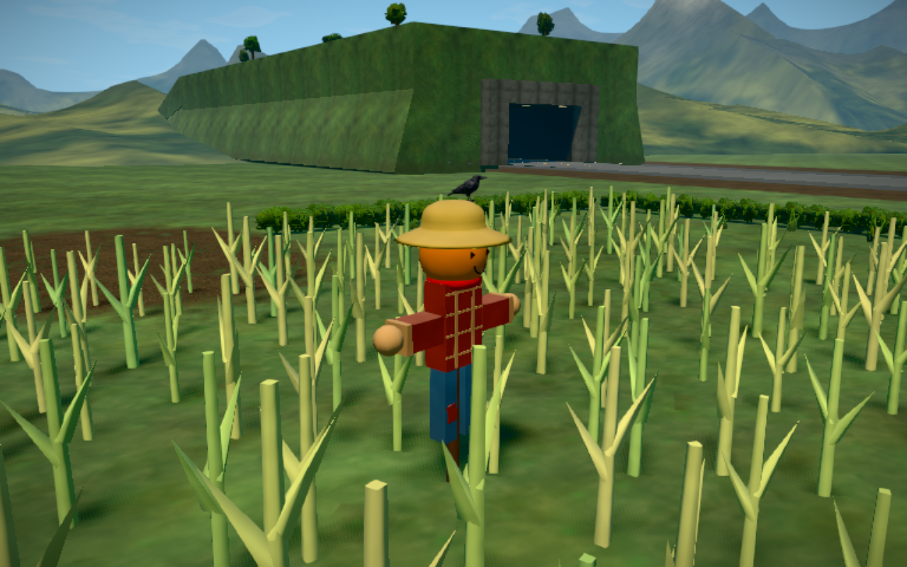
Scarecrow and crow restored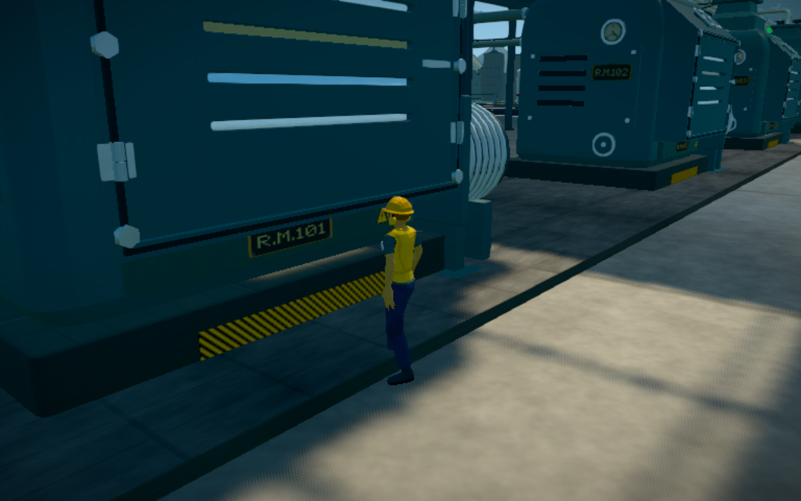
Mill work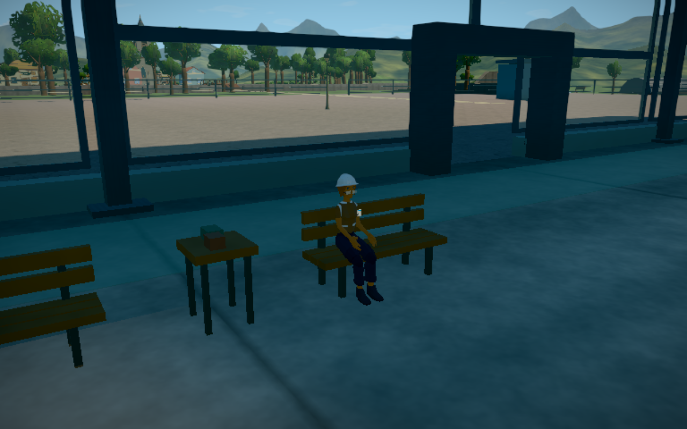
Seated breaks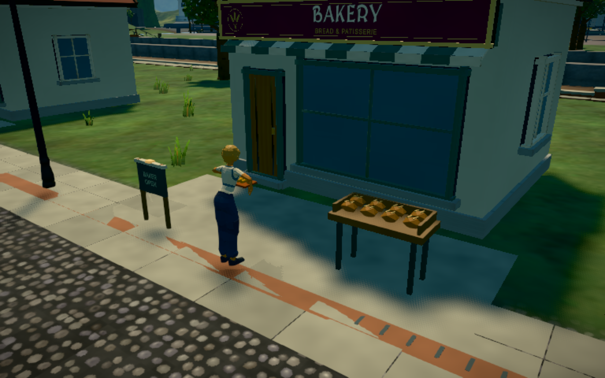
Baker and bread display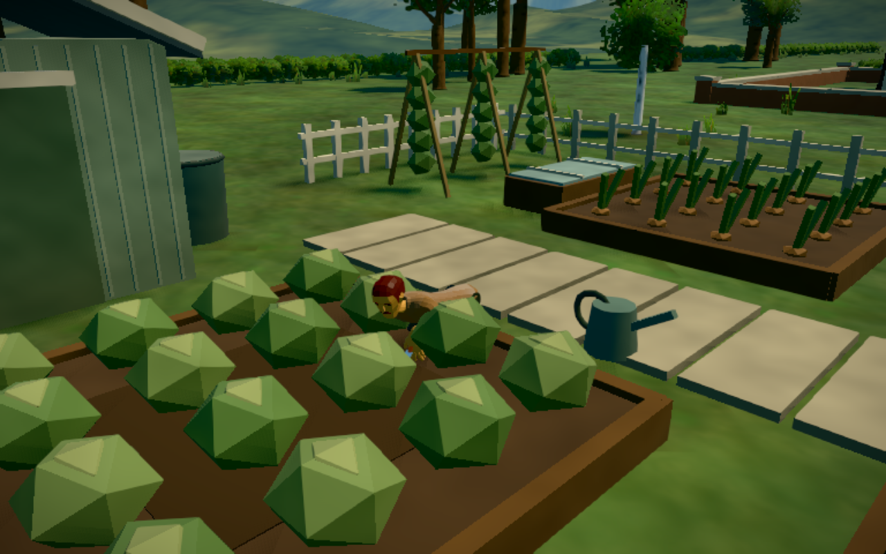
Allotment gardener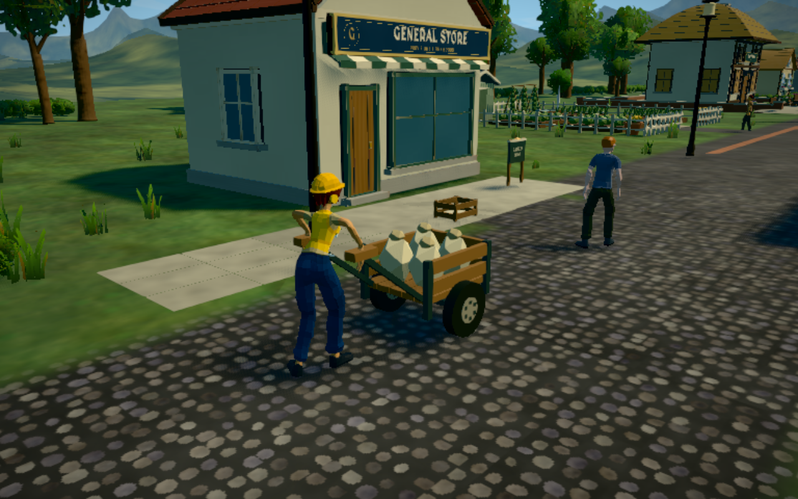
Loaded flour delivery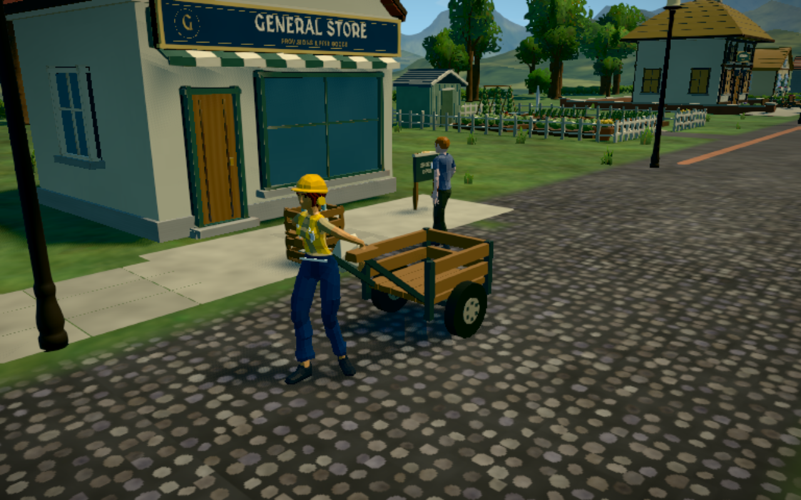
Empty cart returning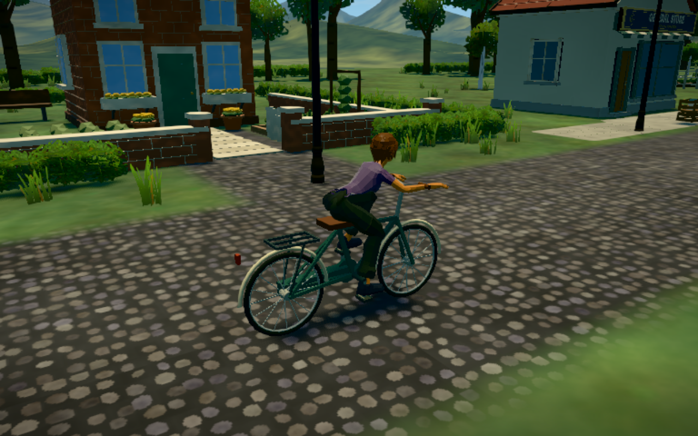
Village cyclist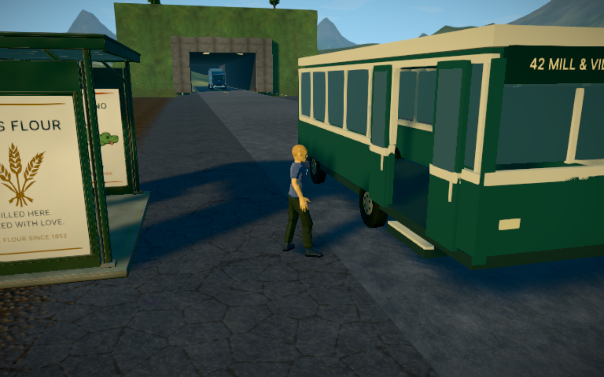
Route 42 boarding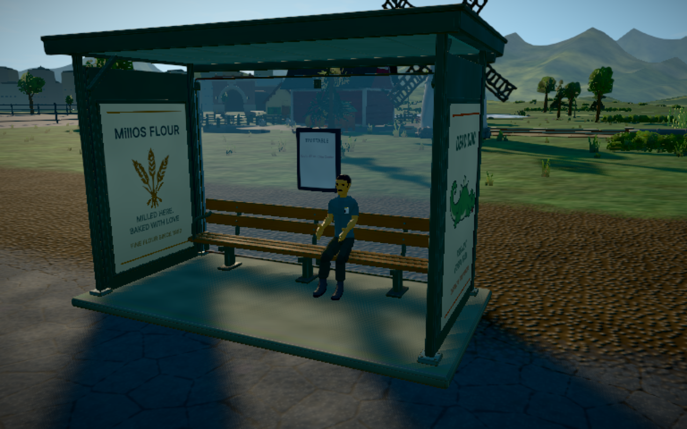
Shelter rest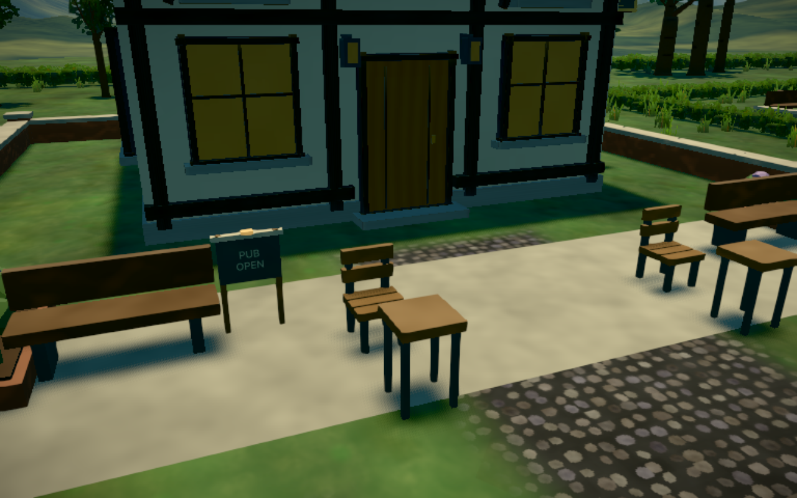
Pub garden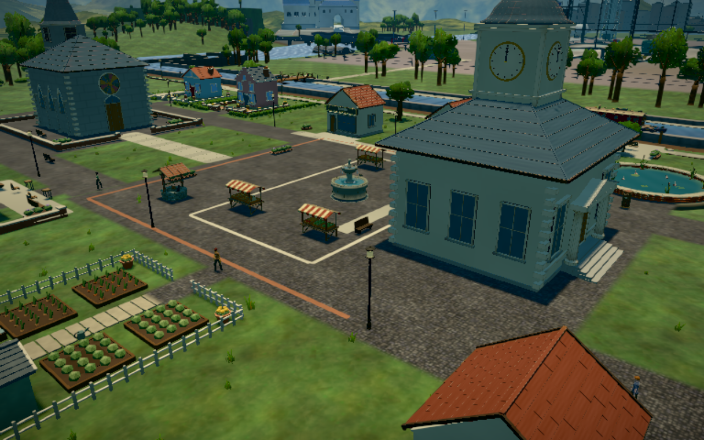
Village life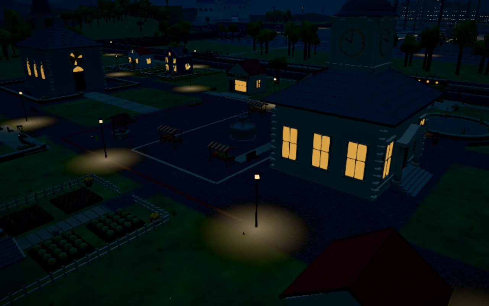
Night-time village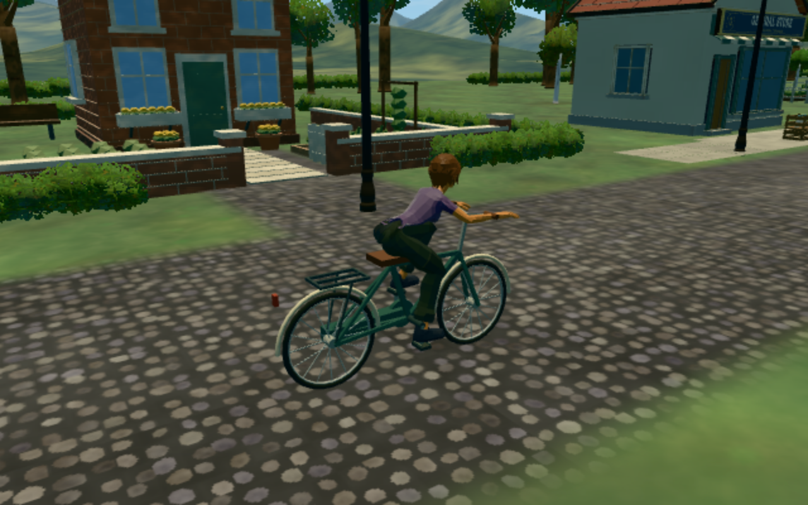
Low quality, retained characters